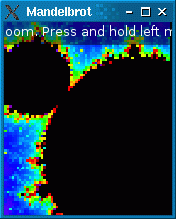
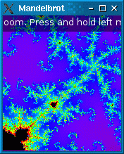
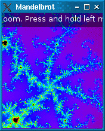

Mandelbrot
The Mandelbrot example demonstrates multi-thread programming using Qt. It shows how to use a worker thread to perform heavy computations without blocking the main thread's event loop.

The heavy computation here is the Mandelbrot set, probably the world's most famous fractal. These days, while sophisticated programs, such as XaoS, provide real-time zooming in the Mandelbrot set, the standard Mandelbrot algorithm is just slow enough for our purposes.
In real life, the approach described here is applicable to a large set of problems, including synchronous network I/O and database access, where the user interface must remain responsive while some heavy operation is taking place. The Blocking Fortune Client example shows the same principle at work in a TCP client.
The Mandelbrot application supports zooming and scrolling using the mouse or the keyboard. To avoid freezing the main thread's event loop (and, as a consequence, the application's user interface), we put all the fractal computation in a separate worker thread. The thread emits a signal when it is done rendering the fractal.
During the time where the worker thread is recomputing the fractal to reflect the new zoom factor position, the main thread simply scales the previously rendered pixmap to provide immediate feedback. The result doesn't look as good as what the worker thread eventually ends up providing, but at least it makes the application more responsive. The sequence of screenshots below shows the original image, the scaled image, and the rerendered image.
 |  |  |
Similarly, when the user scrolls, the previous pixmap is scrolled immediately, revealing unpainted areas beyond the edge of the pixmap, while the image is rendered by the worker thread.
|  |  |  |
The application consists of two classes:
RenderThreadis a QThread subclass that renders the Mandelbrot set.MandelbrotWidgetis a QWidget subclass that shows the Mandelbrot set on screen and lets the user zoom and scroll.
If you are not already familiar with Qt's thread support, we recommend that you start by reading the Thread Support in Qt overview.
RenderThread Class Definition
We'll start with the definition of the RenderThread class:
class RenderThread : public QThread { Q_OBJECT public: RenderThread(QObject *parent = nullptr); ~RenderThread(); void render(double centerX, double centerY, double scaleFactor, QSize resultSize, double devicePixelRatio); static void setNumPasses(int n) { numPasses = n; } static QString infoKey() { return QStringLiteral("info"); } signals: void renderedImage(const QImage &image, double scaleFactor); protected: void run() override; private: static uint rgbFromWaveLength(double wave); QMutex mutex; QWaitCondition condition; double centerX; double centerY; double scaleFactor; double devicePixelRatio; QSize resultSize; static int numPasses; bool restart = false; bool abort = false; static constexpr int ColormapSize = 512; uint colormap[ColormapSize]; };
The class inherits QThread so that it gains the ability to run in a separate thread. Apart from the constructor and destructor, render() is the only public function. Whenever the thread is done rendering an image, it emits the renderedImage() signal.
The protected run() function is reimplemented from QThread. It is automatically called when the thread is started.
In the private section, we have a QMutex, a QWaitCondition, and a few other data members. The mutex protects the other data member.
RenderThread Class Implementation
RenderThread::RenderThread(QObject *parent) : QThread(parent) { for (int i = 0; i < ColormapSize; ++i) colormap[i] = rgbFromWaveLength(380.0 + (i * 400.0 / ColormapSize)); }
In the constructor, we initialize the restart and abort variables to false. These variables control the flow of the run() function.
We also initialize the colormap array, which contains a series of RGB colors.
RenderThread::~RenderThread() { mutex.lock(); abort = true; condition.wakeOne(); mutex.unlock(); wait(); }
The destructor can be called at any point while the thread is active. We set abort to true to tell run() to stop running as soon as possible. We also call QWaitCondition::wakeOne() to wake up the thread if it's sleeping. (As we will see when we review run(), the thread is put to sleep when it has nothing to do.)
The important thing to notice here is that run() is executed in its own thread (the worker thread), whereas the RenderThread constructor and destructor (as well as the render() function) are called by the thread that created the worker thread. Therefore, we need a mutex to protect accesses to the abort and condition variables, which might be accessed at any time by run().
At the end of the destructor, we call QThread::wait() to wait until run() has exited before the base class destructor is invoked.
void RenderThread::render(double centerX, double centerY, double scaleFactor, QSize resultSize, double devicePixelRatio) { QMutexLocker locker(&mutex); this->centerX = centerX; this->centerY = centerY; this->scaleFactor = scaleFactor; this->devicePixelRatio = devicePixelRatio; this->resultSize = resultSize; if (!isRunning()) { start(LowPriority); } else { restart = true; condition.wakeOne(); } }
The render() function is called by the MandelbrotWidget whenever it needs to generate a new image of the Mandelbrot set. The centerX, centerY, and scaleFactor parameters specify the portion of the fractal to render; resultSize specifies the size of the resulting QImage.
The function stores the parameters in member variables. If the thread isn't already running, it starts it; otherwise, it sets restart to true (telling run() to stop any unfinished computation and start again with the new parameters) and wakes up the thread, which might be sleeping.
void RenderThread::run() { QElapsedTimer timer; forever { mutex.lock(); const double devicePixelRatio = this->devicePixelRatio; const QSize resultSize = this->resultSize * devicePixelRatio; const double requestedScaleFactor = this->scaleFactor; const double scaleFactor = requestedScaleFactor / devicePixelRatio; const double centerX = this->centerX; const double centerY = this->centerY; mutex.unlock();
run() is quite a big function, so we'll break it down into parts.
The function body is an infinite loop which starts by storing the rendering parameters in local variables. As usual, we protect accesses to the member variables using the class's mutex. Storing the member variables in local variables allows us to minimize the amount of code that needs to be protected by a mutex. This ensures that the main thread will never have to block for too long when it needs to access RenderThread's member variables (e.g., in render()).
The forever keyword is a Qt pseudo-keyword.
const int halfWidth = resultSize.width() / 2;
const int halfHeight = resultSize.height() / 2;
QImage image(resultSize, QImage::Format_RGB32);
image.setDevicePixelRatio(devicePixelRatio);
int pass = 0;
while (pass < numPasses) {
const int MaxIterations = (1 << (2 * pass + 6)) + 32;
constexpr int Limit = 4;
bool allBlack = true;
timer.restart();
for (int y = -halfHeight; y < halfHeight; ++y) {
if (restart)
break;
if (abort)
return;
auto scanLine =
reinterpret_cast<uint *>(image.scanLine(y + halfHeight));
const double ay = centerY + (y * scaleFactor);
for (int x = -halfWidth; x < halfWidth; ++x) {
const double ax = centerX + (x * scaleFactor);
double a1 = ax;
double b1 = ay;
int numIterations = 0;
do {
++numIterations;
const double a2 = (a1 * a1) - (b1 * b1) + ax;
const double b2 = (2 * a1 * b1) + ay;
if ((a2 * a2) + (b2 * b2) > Limit)
break;
++numIterations;
a1 = (a2 * a2) - (b2 * b2) + ax;
b1 = (2 * a2 * b2) + ay;
if ((a1 * a1) + (b1 * b1) > Limit)
break;
} while (numIterations < MaxIterations);
if (numIterations < MaxIterations) {
*scanLine++ = colormap[numIterations % ColormapSize];
allBlack = false;
} else {
*scanLine++ = qRgb(0, 0, 0);
}
}
}
if (allBlack && pass == 0) {
pass = 4;
} else {
if (!restart) {
QString message;
QTextStream str(&message);
str << " Pass " << (pass + 1) << '/' << numPasses
<< ", max iterations: " << MaxIterations << ", time: ";
const auto elapsed = timer.elapsed();
if (elapsed > 2000)
str << (elapsed / 1000) << 's';
else
str << elapsed << "ms";
image.setText(infoKey(), message);
emit renderedImage(image, requestedScaleFactor);
}
++pass;
}
}
Then comes the core of the algorithm. Instead of trying to create a perfect Mandelbrot set image, we do multiple passes and generate more and more precise (and computationally expensive) approximations of the fractal.
We create a high resolution pixmap by applying the device pixel ratio to the target size (see Drawing High Resolution Versions of Pixmaps and Images).
If we discover inside the loop that restart has been set to true (by render()), we break out of the loop immediately, so that the control quickly returns to the very top of the outer loop (the forever loop) and we fetch the new rendering parameters. Similarly, if we discover that abort has been set to true (by the RenderThread destructor), we return from the function immediately, terminating the thread.
The core algorithm is beyond the scope of this tutorial.
mutex.lock();
if (!restart)
condition.wait(&mutex);
restart = false;
mutex.unlock();
}
}
Once we're done with all the iterations, we call QWaitCondition::wait() to put the thread to sleep, unless restart is true. There's no use in keeping a worker thread looping indefinitely while there's nothing to do.
uint RenderThread::rgbFromWaveLength(double wave) { double r = 0; double g = 0; double b = 0; if (wave >= 380.0 && wave <= 440.0) { r = -1.0 * (wave - 440.0) / (440.0 - 380.0); b = 1.0; } else if (wave >= 440.0 && wave <= 490.0) { g = (wave - 440.0) / (490.0 - 440.0); b = 1.0; } else if (wave >= 490.0 && wave <= 510.0) { g = 1.0; b = -1.0 * (wave - 510.0) / (510.0 - 490.0); } else if (wave >= 510.0 && wave <= 580.0) { r = (wave - 510.0) / (580.0 - 510.0); g = 1.0; } else if (wave >= 580.0 && wave <= 645.0) { r = 1.0; g = -1.0 * (wave - 645.0) / (645.0 - 580.0); } else if (wave >= 645.0 && wave <= 780.0) { r = 1.0; } double s = 1.0; if (wave > 700.0) s = 0.3 + 0.7 * (780.0 - wave) / (780.0 - 700.0); else if (wave < 420.0) s = 0.3 + 0.7 * (wave - 380.0) / (420.0 - 380.0); r = std::pow(r * s, 0.8); g = std::pow(g * s, 0.8); b = std::pow(b * s, 0.8); return qRgb(int(r * 255), int(g * 255), int(b * 255)); }
The rgbFromWaveLength() function is a helper function that converts a wave length to a RGB value compatible with 32-bit QImages. It is called from the constructor to initialize the colormap array with pleasing colors.
MandelbrotWidget Class Definition
The MandelbrotWidget class uses RenderThread to draw the Mandelbrot set on screen. Here's the class definition:
class MandelbrotWidget : public QWidget { Q_DECLARE_TR_FUNCTIONS(MandelbrotWidget) public: MandelbrotWidget(QWidget *parent = nullptr); protected: QSize sizeHint() const override { return {1024, 768}; }; void paintEvent(QPaintEvent *event) override; void resizeEvent(QResizeEvent *event) override; void keyPressEvent(QKeyEvent *event) override; #if QT_CONFIG(wheelevent) void wheelEvent(QWheelEvent *event) override; #endif void mousePressEvent(QMouseEvent *event) override; void mouseMoveEvent(QMouseEvent *event) override; void mouseReleaseEvent(QMouseEvent *event) override; #ifndef QT_NO_GESTURES bool event(QEvent *event) override; #endif private: void updatePixmap(const QImage &image, double scaleFactor); void zoom(double zoomFactor); void scroll(int deltaX, int deltaY); #ifndef QT_NO_GESTURES bool gestureEvent(QGestureEvent *event); #endif RenderThread thread; QPixmap pixmap; QPoint pixmapOffset; QPoint lastDragPos; QString help; QString info; double centerX; double centerY; double pixmapScale; double curScale; };
The widget reimplements many event handlers from QWidget. In addition, it has an updatePixmap() slot that we'll connect to the worker thread's renderedImage() signal to update the display whenever we receive new data from the thread.
Among the private variables, we have thread of type RenderThread and pixmap, which contains the last rendered image.
MandelbrotWidget Class Implementation
constexpr double DefaultCenterX = -0.637011; constexpr double DefaultCenterY = -0.0395159; constexpr double DefaultScale = 0.00403897; constexpr double ZoomInFactor = 0.8; constexpr double ZoomOutFactor = 1 / ZoomInFactor; constexpr int ScrollStep = 20;
The implementation starts with a few constants that we'll need later on.
MandelbrotWidget::MandelbrotWidget(QWidget *parent) : QWidget(parent), centerX(DefaultCenterX), centerY(DefaultCenterY), pixmapScale(DefaultScale), curScale(DefaultScale) { help = tr("Zoom with mouse wheel, +/- keys or pinch. Scroll with arrow keys or by dragging."); connect(&thread, &RenderThread::renderedImage, this, &MandelbrotWidget::updatePixmap); setWindowTitle(tr("Mandelbrot")); #if QT_CONFIG(cursor) setCursor(Qt::CrossCursor); #endif }
The interesting part of the constructor is the QObject::connect() call.
Although it looks like a standard signal-slot connection between two QObjects, because the signal is emitted in a different thread than the receiver lives in, the connection is effectively a queued connection. These connections are asynchronous (i.e., non-blocking), meaning that the slot will be called at some point after the emit statement. What's more, the slot will be invoked in the thread in which the receiver lives. Here, the signal is emitted in the worker thread, and the slot is executed in the GUI thread when control returns to the event loop.
With queued connections, Qt must store a copy of the arguments that were passed to the signal so that it can pass them to the slot later on. Qt knows how to take of copy of many C++ and Qt types, so, no further action is needed for QImage. If a custom type was used, a call to the template function qRegisterMetaType() would be required before the type could be used as a parameter in queued connections.
void MandelbrotWidget::paintEvent(QPaintEvent * /* event */) { QPainter painter(this); painter.fillRect(rect(), Qt::black); if (pixmap.isNull()) { painter.setPen(Qt::white); painter.drawText(rect(), Qt::AlignCenter|Qt::TextWordWrap, tr("Rendering initial image, please wait...")); return; }
In paintEvent(), we start by filling the background with black. If we have nothing to paint yet (pixmap is null), we display a message on the widget asking the user to be patient and return from the function immediately.
if (qFuzzyCompare(curScale, pixmapScale)) {
painter.drawPixmap(pixmapOffset, pixmap);
} else {
const auto previewPixmap = qFuzzyCompare(pixmap.devicePixelRatio(), qreal(1))
? pixmap
: pixmap.scaled(pixmap.deviceIndependentSize().toSize(), Qt::KeepAspectRatio,
Qt::SmoothTransformation);
const double scaleFactor = pixmapScale / curScale;
const int newWidth = int(previewPixmap.width() * scaleFactor);
const int newHeight = int(previewPixmap.height() * scaleFactor);
const int newX = pixmapOffset.x() + (previewPixmap.width() - newWidth) / 2;
const int newY = pixmapOffset.y() + (previewPixmap.height() - newHeight) / 2;
painter.save();
painter.translate(newX, newY);
painter.scale(scaleFactor, scaleFactor);
const QRectF exposed = painter.transform().inverted().mapRect(rect())
.adjusted(-1, -1, 1, 1);
painter.drawPixmap(exposed, previewPixmap, exposed);
painter.restore();
}
If the pixmap has the right scale factor, we draw the pixmap directly onto the widget.
Otherwise, we create a preview pixmap to be shown until the calculation finishes and translate the coordinate system accordingly.
Since we are going to use transformations on the painter and use an overload of QPainter::drawPixmap() that does not support high resolution pixmaps in that case, we create a pixmap with device pixel ratio 1.
By reverse mapping the widget's rectangle using the scaled painter matrix, we also make sure that only the exposed areas of the pixmap are drawn. The calls to QPainter::save() and QPainter::restore() make sure that any painting performed afterwards uses the standard coordinate system.
const QFontMetrics metrics = painter.fontMetrics();
if (!info.isEmpty()){
const int infoWidth = metrics.horizontalAdvance(info);
const int infoHeight = (infoWidth/width() + 1) * (metrics.height() + 5);
painter.setPen(Qt::NoPen);
painter.setBrush(QColor(0, 0, 0, 127));
painter.drawRect((width() - infoWidth) / 2 - 5, 0, infoWidth + 10, infoHeight);
painter.setPen(Qt::white);
painter.drawText(rect(), Qt::AlignHCenter|Qt::AlignTop|Qt::TextWordWrap, info);
}
const int helpWidth = metrics.horizontalAdvance(help);
const int helpHeight = (helpWidth/width() + 1) * (metrics.height() + 5);
painter.setPen(Qt::NoPen);
painter.setBrush(QColor(0, 0, 0, 127));
painter.drawRect((width() - helpWidth) / 2 - 5, height()-helpHeight, helpWidth + 10,
helpHeight);
painter.setPen(Qt::white);
painter.drawText(rect(), Qt::AlignHCenter|Qt::AlignBottom|Qt::TextWordWrap, help);
}
At the end of the paint event handler, we draw a text string and a semi-transparent rectangle on top of the fractal.
void MandelbrotWidget::resizeEvent(QResizeEvent * /* event */) { thread.render(centerX, centerY, curScale, size(), devicePixelRatio()); }
Whenever the user resizes the widget, we call render() to start generating a new image, with the same centerX, centerY, and curScale parameters but with the new widget size.
Notice that we rely on resizeEvent() being automatically called by Qt when the widget is shown the first time to generate the initial image.
void MandelbrotWidget::keyPressEvent(QKeyEvent *event) { switch (event->key()) { case Qt::Key_Plus: zoom(ZoomInFactor); break; case Qt::Key_Minus: zoom(ZoomOutFactor); break; case Qt::Key_Left: scroll(-ScrollStep, 0); break; case Qt::Key_Right: scroll(+ScrollStep, 0); break; case Qt::Key_Down: scroll(0, -ScrollStep); break; case Qt::Key_Up: scroll(0, +ScrollStep); break; case Qt::Key_Q: close(); break; default: QWidget::keyPressEvent(event); } }
The key press event handler provides a few keyboard bindings for the benefit of users who don't have a mouse. The zoom() and scroll() functions will be covered later.
void MandelbrotWidget::wheelEvent(QWheelEvent *event) { const int numDegrees = event->angleDelta().y() / 8; const double numSteps = numDegrees / double(15); zoom(pow(ZoomInFactor, numSteps)); }
The wheel event handler is reimplemented to make the mouse wheel control the zoom level. QWheelEvent::angleDelta() returns the angle of the wheel mouse movement, in eighths of a degree. For most mice, one wheel step corresponds to 15 degrees. We find out how many mouse steps we have and determine the resulting zoom factor. For example, if we have two wheel steps in the positive direction (i.e., +30 degrees), the zoom factor becomes ZoomInFactor to the second power, i.e. 0.8 * 0.8 = 0.64.
void MandelbrotWidget::mousePressEvent(QMouseEvent *event) { if (event->button() == Qt::LeftButton) lastDragPos = event->position().toPoint(); }
Pinch to zoom has been implemented with QGesture as outlined in Gestures in Widgets and Graphics View.
#ifndef QT_NO_GESTURES bool MandelbrotWidget::gestureEvent(QGestureEvent *event) { if (auto *pinch = static_cast<QPinchGesture *>(event->gesture(Qt::PinchGesture))) { if (pinch->changeFlags().testFlag(QPinchGesture::ScaleFactorChanged)) zoom(1.0 / pinch->scaleFactor()); return true; } return false; } bool MandelbrotWidget::event(QEvent *event) { if (event->type() == QEvent::Gesture) return gestureEvent(static_cast<QGestureEvent*>(event)); return QWidget::event(event); } #endif
When the user presses the left mouse button, we store the mouse pointer position in lastDragPos.
void MandelbrotWidget::mouseMoveEvent(QMouseEvent *event) { if (event->buttons() & Qt::LeftButton) { pixmapOffset += event->position().toPoint() - lastDragPos; lastDragPos = event->position().toPoint(); update(); } }
When the user moves the mouse pointer while the left mouse button is pressed, we adjust pixmapOffset to paint the pixmap at a shifted position and call QWidget::update() to force a repaint.
void MandelbrotWidget::mouseReleaseEvent(QMouseEvent *event) { if (event->button() == Qt::LeftButton) { pixmapOffset += event->position().toPoint() - lastDragPos; lastDragPos = QPoint(); const auto pixmapSize = pixmap.deviceIndependentSize().toSize(); const int deltaX = (width() - pixmapSize.width()) / 2 - pixmapOffset.x(); const int deltaY = (height() - pixmapSize.height()) / 2 - pixmapOffset.y(); scroll(deltaX, deltaY); } }
When the left mouse button is released, we update pixmapOffset just like we did on a mouse move and we reset lastDragPos to a default value. Then, we call scroll() to render a new image for the new position. (Adjusting pixmapOffset isn't sufficient because areas revealed when dragging the pixmap are drawn in black.)
void MandelbrotWidget::updatePixmap(const QImage &image, double scaleFactor) { if (!lastDragPos.isNull()) return; info = image.text(RenderThread::infoKey()); pixmap = QPixmap::fromImage(image); pixmapOffset = QPoint(); lastDragPos = QPoint(); pixmapScale = scaleFactor; update(); }
The updatePixmap() slot is invoked when the worker thread has finished rendering an image. We start by checking whether a drag is in effect and do nothing in that case. In the normal case, we store the image in pixmap and reinitialize some of the other members. At the end, we call QWidget::update() to refresh the display.
At this point, you might wonder why we use a QImage for the parameter and a QPixmap for the data member. Why not stick to one type? The reason is that QImage is the only class that supports direct pixel manipulation, which we need in the worker thread. On the other hand, before an image can be drawn on screen, it must be converted into a pixmap. It's better to do the conversion once and for all here, rather than in paintEvent().
void MandelbrotWidget::zoom(double zoomFactor) { curScale *= zoomFactor; update(); thread.render(centerX, centerY, curScale, size(), devicePixelRatio()); }
In zoom(), we recompute curScale. Then we call QWidget::update() to draw a scaled pixmap, and we ask the worker thread to render a new image corresponding to the new curScale value.
void MandelbrotWidget::scroll(int deltaX, int deltaY) { centerX += deltaX * curScale; centerY += deltaY * curScale; update(); thread.render(centerX, centerY, curScale, size(), devicePixelRatio()); }
scroll() is similar to zoom(), except that the affected parameters are centerX and centerY.
The main() Function
The application's multithreaded nature has no impact on its main() function, which is as simple as usual:
int main(int argc, char *argv[]) { QApplication app(argc, argv); QCommandLineParser parser; parser.setApplicationDescription(u"Qt Mandelbrot Example"_s); parser.addHelpOption(); parser.addVersionOption(); QCommandLineOption passesOption(u"passes"_s, u"Number of passes (1-8)"_s, u"passes"_s); parser.addOption(passesOption); parser.process(app); if (parser.isSet(passesOption)) { const auto passesStr = parser.value(passesOption); bool ok; const int passes = passesStr.toInt(&ok); if (!ok || passes < 1 || passes > 8) { qWarning() << "Invalid value:" << passesStr; return -1; } RenderThread::setNumPasses(passes); } MandelbrotWidget widget; widget.grabGesture(Qt::PinchGesture); widget.show(); return app.exec(); }